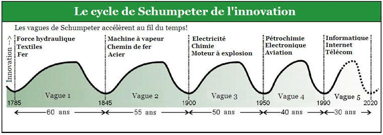

I Identifier les conséquences du numérique sur l'environnement des entreprises
A/ Qu'est-ce que l'économie numérique ?
1. Une économie de l'information et de la connaissance
L'économie numérique recouvre différentes réalités.
Fondée sur la technologie numérique, elle regroupe l'ensemble des activités et des acteurs qui utilisent l'exploitation des données numériques.
La technologie numérique désigne le codage des informations en nombre : toute donnée est traduite en un nombre permettant un stockage rapide et important de données, que l'on appelle « Big Data ». Ce dernier désigne le stockage d'un volume très important de données numériques. On parle également de « mégadonnées » ou de « données massives ».
Ses applications sont aujourd'hui très nombreuses : enregistrement de données sur le comportement des clients, intelligence artificielle via les objets connectés, machine learning...
1.b les trois lois fondamentales de l’économie numérique
Loi de MOORE :- Capacité des microprocesseurs : X2 tous les deux ans
- Progression exponentielle de la puissance de calcul
- Effondrement du coût unitaire
Loi de METCALFE :
- Valeur d’un réseau = (Nombre de terminaux)²/2
- Plus il y a d’utilisateurs, plus le réseau a de la valeur
- Avantage initial au 1er entrant / course à la taille
- Concentration des marchés
Loi de REED :
- Création de valeur par les dynamiques collaboratives
Loi de MetCalfe + Valeur des sous-ensembles
2. Les trois piliers de l'économie numérique
L'économie numérique repose sur trois piliers :
– le pilier technologique , avec le codage des nombres permettant l'augmentation des capacités de stockage, de traitement et de transmission des données. Il est source de nombreuses innovations au niveau des produits (objets connectés, e-commerce, services en ligne...) mais également des procédés de production (amélioration de la logistique et du service client) ;
– le pilier économique , qui désigne la modification de l'environnement économique avec l'apparition de nouveaux secteurs d'activité et de nouveaux acteurs économiques.
À côté des entreprises traditionnelles, apparaissent de nouveaux acteurs comme les GAFA (Google, Apple, Facebook, Amazon), pure players exerçant leur activité commerciale uniquement en ligne en présentant une offre numérique.
De nouveaux secteurs d'activité apparaissent également : services en ligne, jeux vidéo, e-commerce, médias et contenus en ligne, services d'hébergement de données... ;
– le pilier social , avec l'évolution des usages des particuliers qui utilisent les technologies numériques dans leurs activités quotidiennes pour les loisirs, la culture, la santé, l'éducation, la banque, la communication... Le numérique stimule les innovations d'usages et de nouveaux modes de consommation de la part des ménages (consommation collaborative, coproduction et diffusion de connaissance, réseaux sociaux).
B. Les bouleversements liés au numérique
1. L'accélération des cycles d'innovation
Les technologies numériques génèrent un grand nombre de possibilités nouvelles en termes de consommation et de production, auxquelles les entreprises doivent s'adapter rapidement pour rester concurrentielles. Les technologies et les services deviennent obsolètes plus rapidement, les consommateurs plébiscitent l'innovation et l'expérience client. Dans ce contexte, une entreprise traditionnelle qui n'évolue pas vers le numérique risque de perdre ses clients et de laisser ses concurrents ou de nouveaux acteurs capter sa clientèle. Pour une entreprise, le risque de disparaître devient très présent.
Schumpeter estime que le fondement et le ressort de la dynamique de l'économie sont l'innovation et le progrès technique. L'histoire du capitalisme est une mue permanente. La technologie évolue, se transforme poussant des pans entiers de l'activité économique à s'étioler puis à disparaître après avoir été dominants. Le changement est structurel avant d'être quantitatif.

Le hype cycle de Gartner Group
- 1 - L'amorçage
- 2 - Le pic du hype
- 3 - Le gouffre des désillusions
- 4 - Le rebond ou pente de l'illumination
- 5 - Le plateau de Productivité
2. La dématérialisation et le développement des échanges
On observe un mouvement de dématérialisation des échanges au sein des secteurs traditionnels (banques, tourisme, transport...) comme des secteurs liés au numérique , qui conduit à la transformation des marchés désormais ouverts à tous les acteurs avec l'élimination des frontières géographiques qu'elle permet. La révolution numérique accélère le processus de mondialisation.
Pour exemple, 40 % des entreprises figurant dans le top 15 des sites d'e-commerce les plus visités par les Français sont étrangères (essentiellement de nationalité américaine), ce qui traduit l'internationalisation du commerce.
3. L'apparition de nouvelles formes de concurrence
Les entreprises des secteurs traditionnels sont confrontées à deux nouveaux types de concurrence : celle des pure players mais aussi celle des consommateurs qui proposent des biens et des services via des plateformes électroniques.
Les technologies ont considérablement abaissé les barrières à l'entrée sur les marchés, et le développement des modèles de gratuité a favorisé l'émergence de modèles d'affaires venus déstabiliser les positions acquises par les acteurs historiques dans la plupart des secteurs. Ces intervenants cherchent à s'imposer en développant de nouveaux modèles économiques.
L'ubérisation, par exemple, désigne un modèle économique basé sur l'émergence de plateformes digitales mobiles sur lesquelles clients et prestataires peuvent entrer en contact directement, gratuitement et en temps réel, et entrant en concurrence frontale avec les usages de l'économie classique.